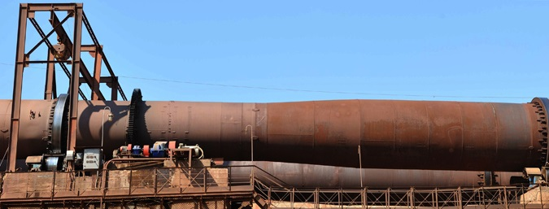

Производство
Этапы производства керамзита

Для того чтобы материал получился высокого качества, важно грамотно подобрать сырье и подходящую технологию производства. Технология производства керамзита включает следующие основные этапы:
- добыча сырья (глины) в карьере и его транспортирование в глинозапасник;
- лабораторные испытания;
- дробление глины. На выходе получаются сырцовые гранулы установленного размера;
- термическая обработка сырцовых гранул, включающая сушку, обжиг и последующее охлаждение продукта;
- при необходимости дробление готового продукта;
- контроль качества производимого товара;
- сортировка керамзита по фракциям;
- складирование товара;
- фасовка товара;
- отгрузка заказчику.
Разработку месторождений глинистых пород производят открытым способом. Для добычи глинистого сырья используют одноковшовые и многоковшовые экскаваторы, ведущие разработку в карьере по всей высоте уступа, при необходимости с выделением отдельных пластов материала.
Мягкие глинистые породы добывают в карьерах, работающих сезонно, камнеподобные — в течение всего года. Для обеспечения непрерывной работы заводов устраивают глинохранилища вместимостью до полугодового запаса сырья с предохранением его от промерзания. Запасы глины также хранят в промежуточных конусах, где она вылеживается в течение нескольких месяцев на открытом воздухе.
В результате температурных воздействий, особенно мороза, переменного увлажнения и высушивания происходит предварительное разрушение естественной структуры сырья, значительно облегчающее его последующую переработку в однородную формовочную массу.
Технологические особенности производства керамзита
В качестве сырья для изготовления данной категории нерудных материалов используются преимущественно осадочные глинистые породы. Они имеют сложный состав и состоят как из минералов (гидрослюды, каолинита), так и из полевого шпата, кварца, карбонатов, органических и железистых примесей. Возможность использования сырья для производства керамзита определяется по критериям вспучивания во время обжига, легкоплавкости и нужного интервала вспучивания. Иногда для модификации данных параметров в материал могут быть добавлены специальные компоненты — органические или синтетические вещества.
Результатом обработки исходного сырья являются сырцовые гранулы нужного состава и размеров. Они подвергаются термической обработке — просушиванию, обжигу и охлаждению. На следующем этапе полученный материал сортируется и при необходимости дробится на мелкие фракции.

Оборудование для производства керамзита
Изготовление материала осуществляется с применением широкого спектра дорогостоящего оборудования — смесителей, специальных станков для разрыхления глины, камневыделительных и дырчатых вальцов, сушильных барабанов, печей для обжига, бункеров, пневматических транспортеров и аппаратов для сортировки гравия. Также для производства керамзита используются лотки, конвейеры, силосные банки и другие приспособления, объединенные в технологические линии.
 Применение керамзита. Расскажем о сфере применения керамзита более подробно. Для чего используют этот материал?.
Применение керамзита. Расскажем о сфере применения керамзита более подробно. Для чего используют этот материал?. {kind=link}
{kind=link}